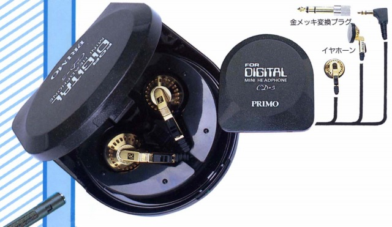

CD-5

■価格 4,800円■型式 ダイナミック型イヤホンタイプ■振動板 ■インピーダンス 16Ω■再生周波数帯域 10-20,000Hz■許容入力 50mW■感度 104ｄB/mW■コード 0.85m L型ステレオミニプラグ/6.3mmアダプター付属■重量 13g（コード含む）■発売 1988年頃（88年度版カタログに掲載）■販売終了 ■備考 サマリュウムコバルトマグネット使用
プリモのインデックスヘ